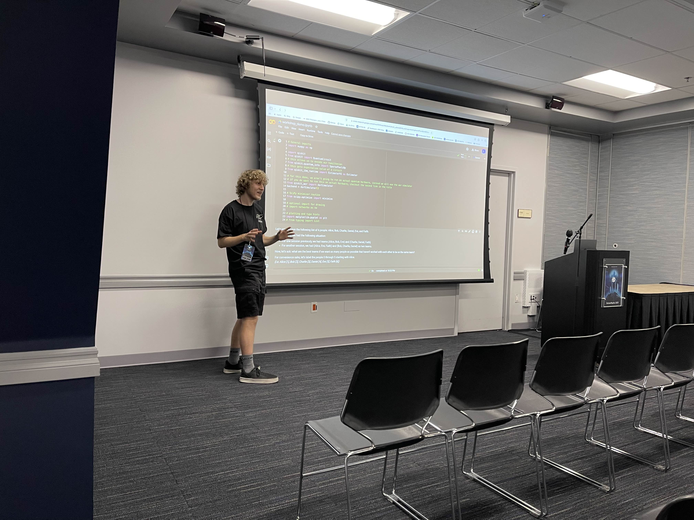

During Hack@UCI’s IrvineHacks 2025, the Quantum Computing club hosted a one-hour, interactive workshop introducing students to one of the most exciting quantum algorithms in near-term computing: the Quantum Approximate Optimization Algorithm (QAOA). The session was led by Diptanshu, Stewart, and Krishna, who guided participants from foundational concepts to a live quantum coding demonstration.
The workshop began with a high-level introduction to quantum computing, adapted from our IrvineHacks slide deck. Students were introduced to the core principles of superposition, entanglement, and interference, along with an overview of qubits, quantum gates, and quantum circuits. Rather than assuming prior knowledge, the team framed quantum computing in terms familiar to hackers—optimization, algorithmic efficiency, and real-world applications in machine learning, finance, and security.
Building on this foundation, the focus shifted to QAOA and its application to combinatorial optimization problems. Using a classroom-inspired “team formation” optimization scenario (similar to the one outlined in our slides), participants saw how classical constraints can be encoded into a cost Hamiltonian and solved through parameterized quantum circuits. The presenters emphasized how QAOA bridges classical and quantum computing: a classical optimizer tunes parameters, while a quantum circuit evaluates candidate solutions.

The highlight of the session was a live coding demonstration using IBM’s Qiskit framework. Participants followed along with our interactive notebook, where we constructed a parameterized quantum circuit, applied alternating cost and mixer operators, and executed simulations to observe measurement distributions. Watching probability amplitudes shift as parameters were optimized gave attendees a tangible sense of how quantum interference can amplify better solutions.
Many students were surprised to learn that near-term quantum algorithms like QAOA are designed specifically for today’s noisy intermediate-scale quantum (NISQ) devices. Rather than requiring fully fault-tolerant quantum computers, QAOA leverages shallow circuits and hybrid classical-quantum workflows, making it one of the most practical algorithms currently studied in quantum optimization.
Throughout the session, the room remained highly engaged. Participants asked questions about hardware limitations, scalability, and whether QAOA could outperform classical heuristics in practice. Others were curious about career pathways in quantum software and how they could begin contributing as undergraduates. By the end of the hour, several hackers expressed interest in joining QC@UCI to explore quantum algorithms further.
For QC@UCI, the IrvineHacks workshop represented more than just a technical presentation—it was an opportunity to make quantum computing accessible to a new audience of builders and innovators. By connecting abstract quantum principles to hands-on code and optimization problems, the team demonstrated that quantum computing is not a distant future technology, but an evolving field that students today can actively shape.
We thank Hack@UCI for the opportunity to collaborate and look forward to continuing our mission of empowering Anteaters to design and implement quantum algorithms.